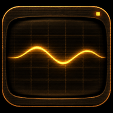

@ATTAR10X
GAMES · SOUNDS
ألعاب وأصوات
العب صقر
· SAQER
a pixel-art journey through Amman
رحلة من وسط البلد إلى فيلادلفيا

TAYF ·
طيف
sounds for focus, sleep and calm
أصوات للتركيز والنوم والهدوء
TAYF FULL VERSION
every control, sleep timer, Mix · $10 / year
النسخة الكاملة من طيف · $10 للسنة